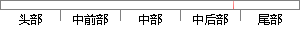

传感器监听模块:Android 的开发者已经对传感器提供了很好的接口，系统可以通过实例化一个 SensorManager 对象对传感器进行监听和数据读取。
片段位置图

相似结果|
1
原句片段： SensorManager 对象对传感器进行监听和数据读取。
相似片段 1：访问传感器列表、注册或解除注册传感器事件监听、获取...第一步:获取SensorManager对象 第二步:获取Sensor对象...层(HAL),它实现了 Sensor 的具体操作和数据获取...
相似片段 2：sensorManager; //第三步:对传感器信号进行监听 private SensorEventListener ...下一篇:Android编程实现全局获取Context及使用Intent传递对象的方法详解 相关资讯 ...
|
※ 片段修改建议 ※
近似词参考：- 已经：已
- 提供：供给 供应
- 系统：体系
- 通过：经由过程
- 对象：工具
- 进行：举行
系统自动生成语句：传感器监听模块:Android 的开发者已对传感器供给了很好的接口，体系可以经由过程实例化一个 SensorManager 工具对传感器举行监听和数据读取。
注：本片段修改建议为系统自动生成，仅供参考。